September, 2020
This project is about one of the favorite features of our users — lists and saved places. We started this project in 2020 during the difficult times of COVID. Our team consisted of me, the product manager, analysts, and developers.
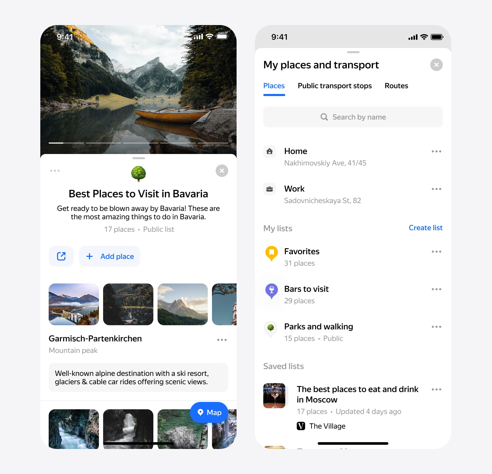Context and Problem
Millions of people are using the Maps app every day. People love to save their favorite places on lists. And they have many reasons. Some people want to create a list with plans for the next trip. Or they keep these places in lists to find them in the interface faster. Also, people could start their user flow in one application and continue in another Yandex application.
The main goal of this project was to set up a new data format for our updated My Places. One of the feature requirements was list sharing, which means we should have to create it privately. Our users should share the list with comments without any problems.
Process. Research and Setup
We're looking into how people use bookmarks these days. We dived into our analytics to see how many lists and places our users have. No brainer, people love places, but they don't use a lot of lists. They usually only use one list, which they have by default. There are two ways to save space in our product. First, by toponym or organization card. The second, of the long tap menu that you can use in any scenario.
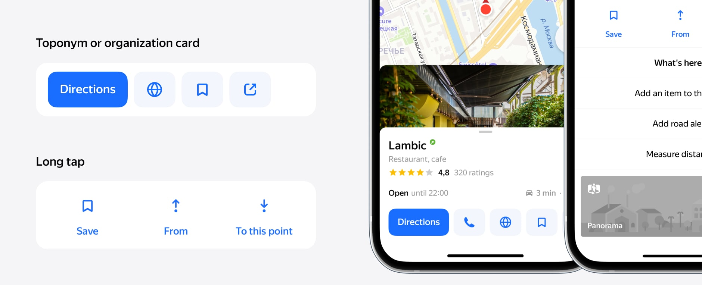We dived into app store user reviews and user requests for our product. People use bookmarks and want to share them. That has been one of the biggest user requests, and our competitor already has this feature.
We also received feedback from our users about the ability to leave a comment. They wanted it because if you share a list, very important to tell someone why this place is on your list. In most cases, this will be like a recommendation or a brief conclusion about places.
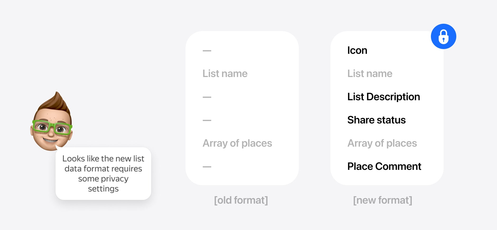The product manager and I agreed on the data format of the new lists. I dived in the mocks the manager started setting up the backend team.
Process. My places
First, I tried to use one design pattern for all list items and remove Edit Mode. After a few iterations, my solution was clear. Now all list items will have a button ••• with options. There are various options for listings and locations on the menu. It is a good template for using the menu context menu.
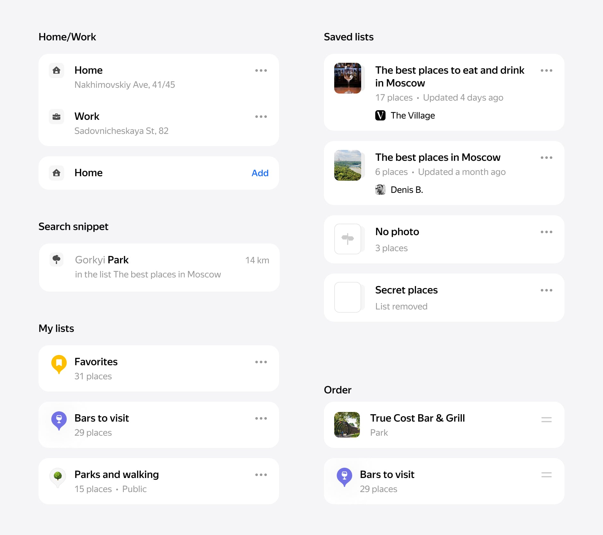In my solution, you can follow (save) the list from another user. But these lists have a difference. You can see that your lists and the subscribed lists have different designs. Your lists have the icon, and subscribed lists have photos. I decided to show the difference between these types of lists. If I use the same design, it looks identical. It means we have a problem recognizing which one lists belongs to you.
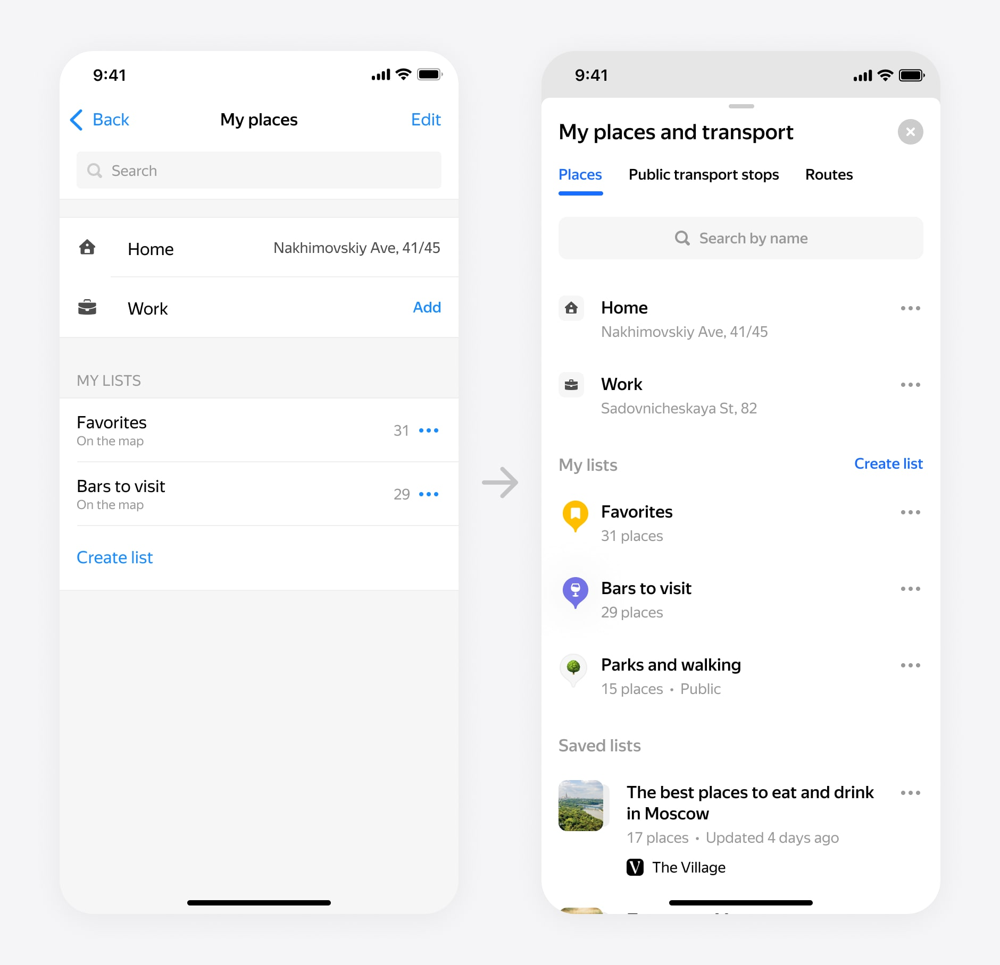 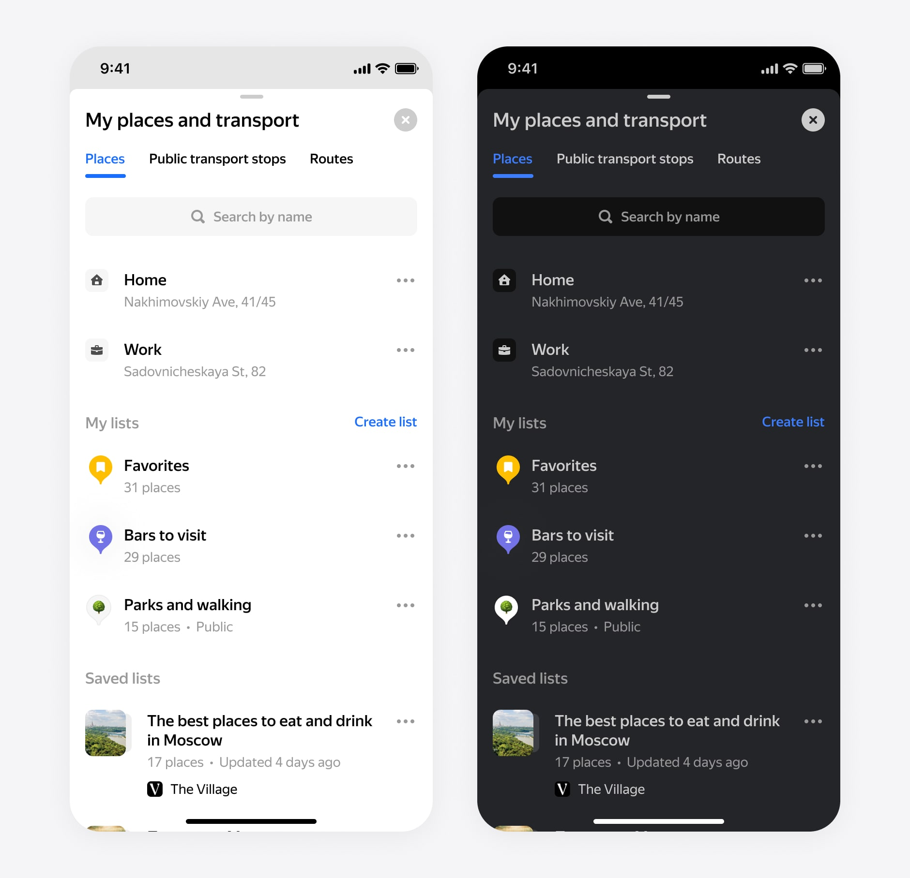The new search now uses the same list item component. You can see your places and a list we haven't shown before.
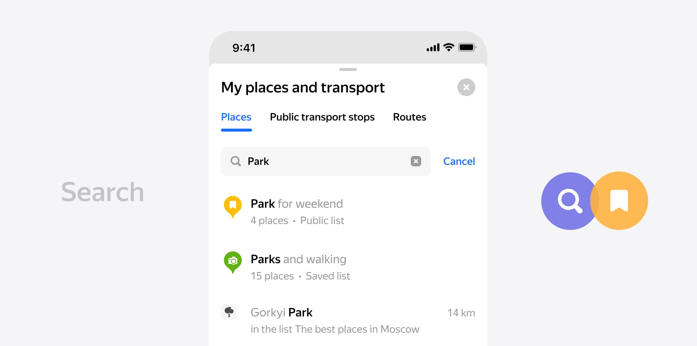Process. Creating list
First of all, let's discuss how to manage your lists. Previously, you could create lists, arrange them, and show or hide them on the map.
For all our users, we have added several new features. Users can now select an icon for lists and add a description. The selected icon will use as a list marker on the map.
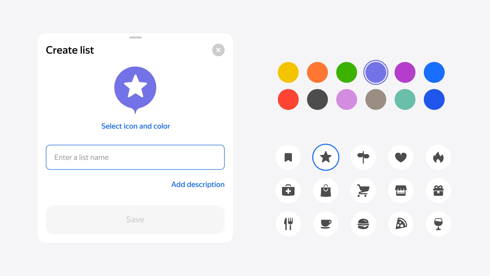For the color icon selection screen, I use the rubric icons. It is the same icons we used in maps (over 100 icons). For iOS, we wanted to add emoji support, but it's not easy because it should work on all platforms. By the way, the emoji had supported already by the hack. It works if you use the emoji of the first letter of the name.
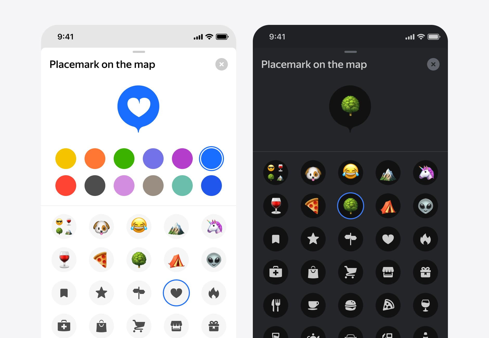Finally, it is how it looks on the map. I used zoom dependency and showed two icon sizes. As you get closer, you will see the name on the saved location. I supported a dark and light theme where I used some rules for a perfect display on the map.
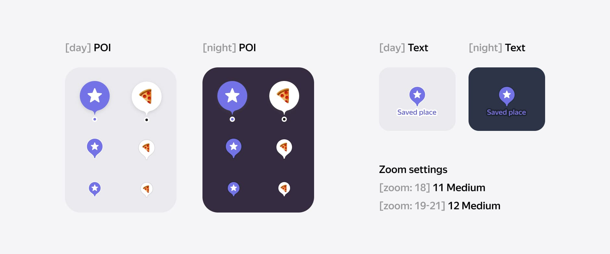Process. Lists
For places in lists, I use the same principle as with snippets on the main screen of lists. I have added ••• an options button also a comment (notes) module for each saved location. Tapping on input will open an input screen with a keyboard.
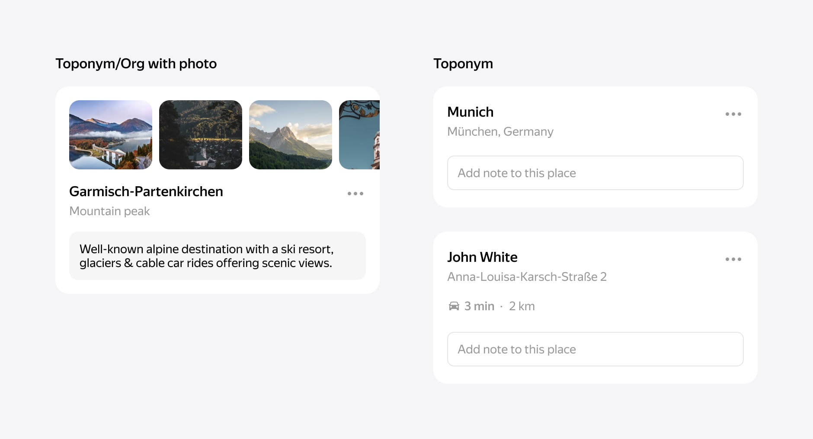The header also has ••• and buttons for Share and Add Place. For public lists, I use the same design. But additionally, show the author and a button to save or subscribe to this list.
A description can contain a lot of text, which means the lists can be collections of places from influencers or publishers.
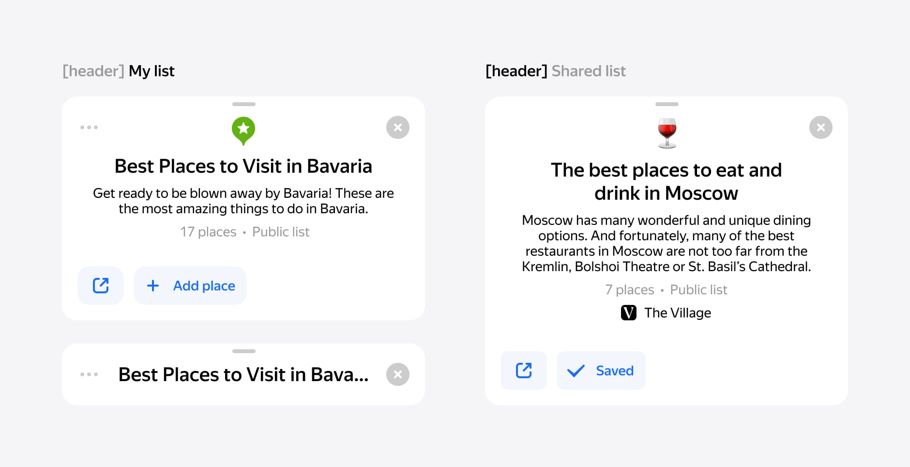We show galleries for fists with organizations or place names that have images. It shows the first image from places in the list. We use this module in our organizations and toponyms.
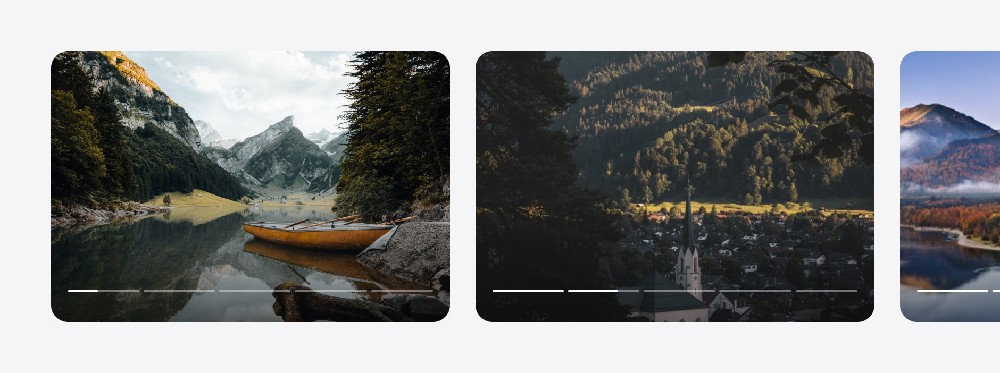Finally, we got the list screen. You can collapse the list and see all places on the map.
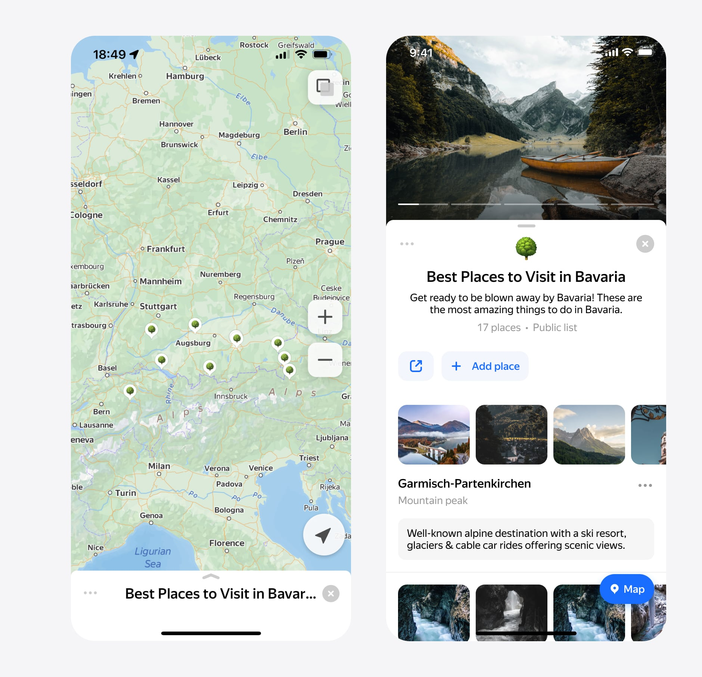Result
Two years passed from the beginning of the project to the final decision in production. We took small steps to integrate feature by feature to get a redesign. The big challenge for our team was to develop this solution on three platforms at the same time. We took our first step on the Desktop and Touch platform because it's the fastest way.
Experiments with the new design have been successful. The user's feedback has been excellent. People love how it looks on a map. People are starting to use lists and share them.
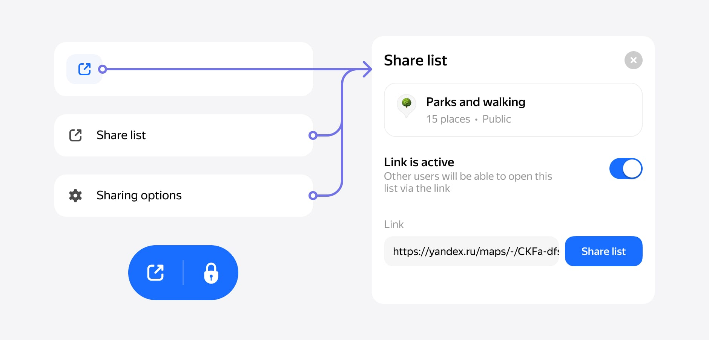The final result is here. A lot of hard work and complicated development. It is just the beginning of our journey. Stay tuned for new major releases